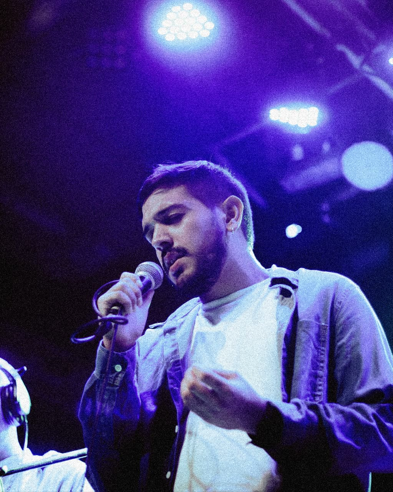

...

Fer Fernandez es un cantautor y músico independiente nacido en Catamarca, Argentina. Su propuesta se enmarca en un Pop/Rock de autor, caracterizado por un sonido orgánico y una estética de "compañía de ruta".
El proyecto dio sus primeros pasos en 2019, logrando un rápido impacto en plataformas digitales, superando las 20.000 reproducciones en Spotify con una versión acústica de “Sólo Aquí”. Tras una etapa abriéndose camino en el circuito de música en vivo de Córdoba, su faceta compositiva tomó protagonismo durante el aislamiento del 2020. Su sencillo debut, "Encontrarme Siempre" (Producido por Fran Santillan), captó la atención de medios nacionales, llevando esta canción a los oídos del icónico Juan Alberto Mateyko, quien la destacó en su programa "La Movida" (Radio Mitre) elogiando su sonido, su contenido y el esfuerzo detrás del proyecto.
Su discografía se ha ido expandiendo con lanzamientos como "Antes que el tiempo se acabe" —bajo la producción de Germán Reccitelli (Sir Hope), quien le aportó una sonoridad pop moderna— y "Mas y Mas"—nuevamente junto a Fran Santillan— que vino acompañado de su primer videoclip oficial.
Hoy, Fer Fernandez encara este 2026 con toda la energía puesta en la grabación de su primer disco de estudio. Pensado para consolidar su lugar en la escena del Pop/Rock, invitando al público a un viaje musical a través del espacio y el tiempo.
Disponibles en todas las plataformas digitales.
Un nuevo comienzo en el escenario.